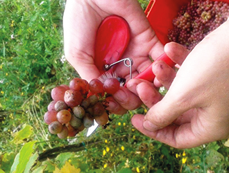

|

|
Telling the story of wine
It is fascinating how a tiny berry, with the right
guidance of dedicated people, and with the help of
nature and time, turns into this magical product
that we call wine. And the most fascinating of it all,
you read all this in your glass: time, effort, nature,
sun, rain, air, attention and dedication.
|